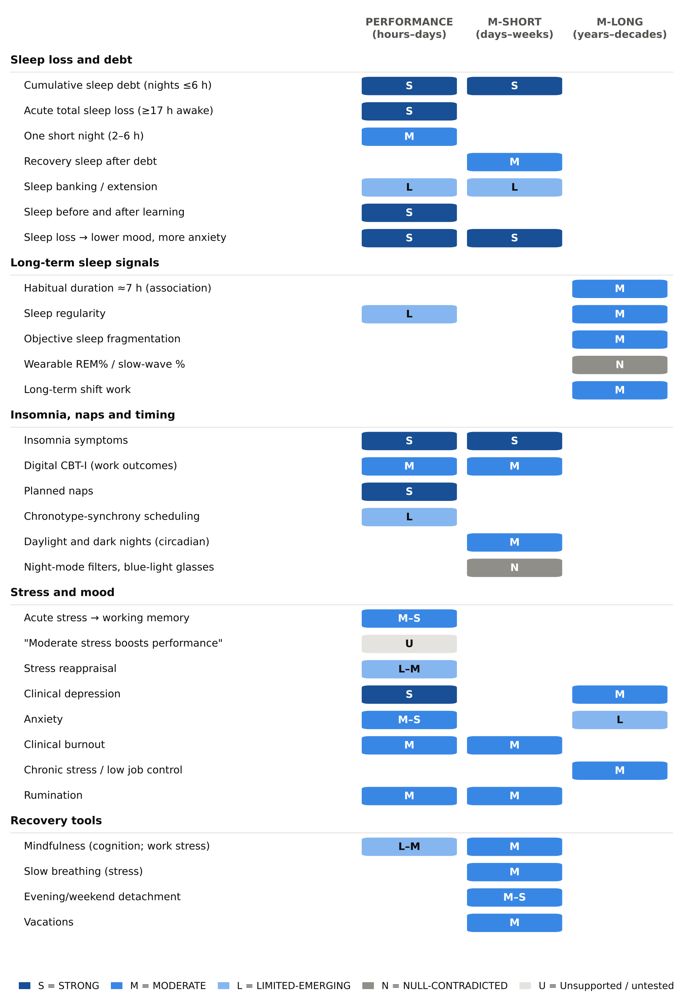
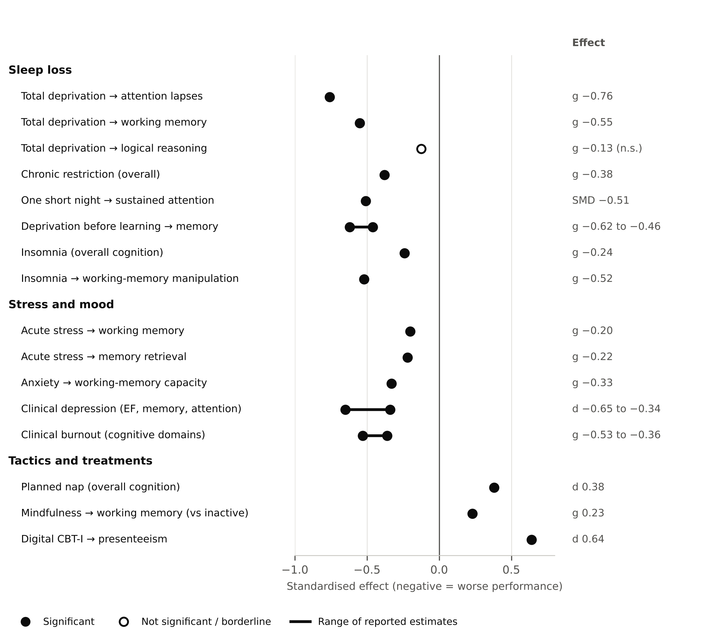

Abstract
Background: Knowledge work depends on sustained attention, working memory and judgement, capacities that are sensitive to sleep, stress and recovery. Advice to working adults on these topics often moves faster than the evidence.
Methods: This evidence-graded narrative review drew on meta-analyses, randomised controlled trials, large cohorts and Mendelian randomisation studies on sleep and circadian habits, stress, mood, emotion regulation and recovery from work. Each component was graded on four levels (STRONG, MODERATE, LIMITED-EMERGING, NULL-CONTRADICTED) across three horizons: performance (hours to days), short-term maintenance (days to weeks) and long-term maintenance (years to decades).
Results: Cumulative sleep debt was the best-supported determinant of day-to-day performance (STRONG): 14 nights at 6 hours in bed impaired attention and working memory to the level of one night of total sleep deprivation, while felt sleepiness levelled off. Recovery from sleep debt was slower than its accumulation (MODERATE). Insomnia was associated with measurable cognitive deficits and lost work productivity (STRONG association), and digital cognitive behavioural therapy for insomnia improved work outcomes (MODERATE). Acute stress impaired working memory (g −0.20) and memory retrieval (g −0.22); clinical burnout carried deficits across cognitive domains (g −0.36 to −0.53); and psychological detachment from work was the strongest recovery correlate of lower fatigue, although no trial has shown that raising detachment causally improves fatigue or cognition. Over the long term, sleep regularity and objectively measured fragmentation were stronger signals than sleep duration, whereas sleep-stage percentages showed no association with dementia (NULL-CONTRADICTED). Most long-horizon findings were observational and partly explained by reverse causation, and founder-specific evidence was limited to small studies.
Conclusions: The largest levers are subtractive — protecting sleep, limiting acute stress and exhaustion, and enabling detachment — and their costs are under-felt. This favours objective, baseline-relative measurement over self-report. Trials in working-age professionals are needed.
- sleep deprivation
- sleep regularity
- insomnia
- occupational stress
- burnout
- psychological detachment
- cognitive performance
- working adults
- entrepreneurs
1. Introduction
Knowledge work — including the work of founders, managers and other professionals — depends on a small set of cognitive capacities that fluctuate from day to day: sustained attention, working memory, flexible judgement and the ability to learn quickly. Sleep, stress and recovery are the most widely discussed influences on these capacities, and they are also the focus of a fast-growing market of wearables, apps and workplace programmes.
Popular advice in this area often moves faster than the evidence. Effects observed in laboratory samples of students are generalised to executives, long-term associations from older cohorts are presented as causal, and some widely shared claims have failed replication. Working adults and the people who build tools for them need to know which effects are large, which are reliable, and in whom they were measured.
This review grades the peer-reviewed evidence for sleep, stress and recovery as determinants of cognitive performance and its maintenance in working adults. It asks three questions: which components measurably change same-day and next-day performance; which sustain capacity across days and weeks; and which are associated with brain health over years and decades. For each component, it reports the size of the effect, the population studied, and whether the evidence supports association only or causation as well. It is one of three companion reviews; the others cover work habits, physical activity, learning strategies and generative AI, and popular cognitive-enhancement claims (companion reviews, in preparation).
2. Methods
2.1 Design
This is an evidence-graded narrative review. It was not conducted as a systematic review, and no protocol was registered.
2.2 Scope
The review was restricted to lifestyle and behavioural components: sleep and circadian habits, acute and chronic stress, mood and emotion regulation, and recovery from work. Environmental exposures, substances, supplements and medical risk factors were out of scope.
2.3 Search and selection
Sources were identified through searches of PubMed/MEDLINE and of publisher and citation databases accessed through Digital Object Identifiers (DOIs), which also captured journals in occupational, organisational and management research that are not indexed in PubMed. Searches combined terms for each component listed in Section 2.2 with terms for cognitive outcomes (for example cognition, attention, working memory, memory, creativity, cognitive decline and dementia) and for study design (meta-analysis, systematic review, randomised controlled trial, cohort and Mendelian randomisation). Only English-language publications were included. The author selected and graded the evidence, with assistance from AI tools (Section 2.8). The final reference list comprises 181 sources published between 1988 and 2026, of which at least 165 are indexed in PubMed.
Priority was given to meta-analyses and umbrella reviews, randomised controlled trials (RCTs), large prospective cohorts and Mendelian randomisation (MR) studies. Working-age samples were preferred where they existed. This review is part of a programme of three companion reviews that drew on 17 topic-specific evidence summaries covering several hundred peer-reviewed sources.
2.4 Verification of figures
Every quantitative figure was checked against the abstract or full text of its primary source. Figures that could not be verified against a primary source — for example, numbers reported only in press releases or effect sizes seen only in secondary summaries — were excluded.
2.5 Evidence grading
Each component was graded on a four-level scale:
- STRONG: several consistent meta-analyses or RCTs.
- MODERATE: one good meta-analysis, or consistent large cohorts or trials.
- LIMITED-EMERGING: single or small studies, or indirect or conflicting evidence.
- NULL-CONTRADICTED: well-powered tests or replications failed.
Where the evidence fitted none of these levels, a plain descriptor is used (“unsupported”, “untested”, “conflicting” or “no direct evidence”). Where association and causation diverge, both grades are given. Where independent grading of the same evidence differed, the range is reported.
2.6 Time horizons
Each component was assigned to one or more horizons: PERFORMANCE (hours to days, including learning and memory consolidation), M-SHORT (sustaining capacity over days to weeks) and M-LONG (protecting the brain over years to decades).
2.7 Effect sizes
Effect sizes are reported as standardised differences (SMD, d or g), where about 0.2 is small and about 0.5 is medium, or as hazard ratios (HR), risk ratios (RR) and odds ratios (OR) as reported by the source studies.
2.8 Use of AI tools
Generative AI tools, including Claude (Anthropic), were used in part to assist with identifying and summarising literature, structuring the manuscript, preparing figures and editing language. The author reviewed all AI-assisted content, checked every claim, figure and reference against the primary sources, and takes full responsibility for the content of this article. AI tools are not listed as authors.
3. Results
3.1 Most evidence comes from students and adults over 50, not working-age professionals
The population constraint shapes every conclusion of this review. Most experimental performance evidence comes from undergraduates doing laboratory tasks, and most dementia and decline evidence comes from cohorts recruited after age 50. Working-age evidence exists in pockets: the Whitehall II (London civil servants recruited at 35–55), CARDIA (recruited at 18–30) and VISAT (French workers aged 32–62) cohorts, the IPD-Work consortium (mean age 45.5), physician and resident trials, a handful of workplace RCTs, generative-AI field experiments, and — for founders specifically — a few diary studies of 55–121 founders, one randomised sleep-deprivation experiment of uncertain sample (Gish 2019), one study of 377 small-business owners (Fernet 2016), one of 203 entrepreneurs (Drnovšek 2025) and one field experiment in Kenyan entrepreneurs (Otis 2026). Reverse causation runs through the long-horizon evidence: in 19 cohorts with a mean baseline age of 45.5, physical inactivity predicted dementia (HR 1.40) only when measured less than 10 years before diagnosis, and not when measured 10 or more years before (HR 1.01) [1]; the same pattern appears for social and cognitive activities [2] and body weight [3]. The report therefore uses “associated with” language for M-LONG claims unless trials or Mendelian randomisation say more.
3.2 Short nights build a debt that people stop feeling
One night without sleep (24–48 hours awake) degrades exactly the abilities knowledge work depends on, and does so unevenly. Pooling 70 studies, attention lapses worsened by g −0.76, working-memory accuracy by −0.55 and complex-attention accuracy by −0.48, while processing-speed accuracy (−0.25) and logical reasoning (−0.125) did not change significantly [4]. The profile may explain a common experience among founders and other professionals: people feel able to “think” because reasoning is spared while lapses and working-memory errors multiply. Wakefulness has been equated with alcohol: 17–19 hours awake matched a 0.05% blood alcohol concentration on some tests in 39 transport and army workers, and longer wakefulness reached the 0.1% level [5]; an earlier one-page Nature letter reported a similar pattern on a psychomotor tracking task [6] — a MODERATE grade that applies to psychomotor tasks, not all cognition. In physicians, under 30 hours of sleep loss cut overall performance by nearly 1 SD and clinical performance by more than 1.5 SD [7].
Chronic restriction is the more realistic founder exposure, and its cost accumulates. In a randomised laboratory study of adults aged 21–38, 14 nights at 6 hours in bed drove attention lapses and working-memory deficits to the level seen after one full night without sleep, and 14 nights at 4 hours to the level of two, while subjective sleepiness rose and then flattened and did not distinguish 6 from 4 hours — participants were “largely unaware” of their growing deficits [8]. A meta-analysis of 61 restriction studies gives an overall effect of g −0.38, with executive function −0.32, sustained attention −0.41 and long-term memory −0.19 [9], and even 7 hours in bed slowed responses relative to 9 hours in a 66-person dose-response study [10]. A single short night of 2–6 hours is narrower: it reliably impairs sustained attention (reaction time SMD 0.51; lapses 0.49) but has no significant effect on working memory, inhibitory control or throughput in a 44-study meta-analysis [11]. Vulnerability to sleep loss is a stable, trait-like individual difference, larger than the effect of sleep history [12], which argues for comparing each person with their own baseline. Grade: STRONG for cumulative debt (PERFORMANCE, M-SHORT); MODERATE for the gap between felt and measured impairment — so an objective performance probe or a running sleep-debt estimate is more informative than asking people how they feel.
Recovery takes longer than a weekend. After five nights at 4 hours, one recovery night of 10 hours in bed (about 9 hours asleep) left vigilance, sleepiness and fatigue incompletely restored in 159 adults aged 22–45 [13]; after a working-week pattern of six nights at 6 hours, two 10-hour nights normalised sleepiness and the inflammatory marker IL-6 but vigilance “did not improve after recovery” [14]; and lapses had not fully recovered even after four 12-hour recovery nights [15]. An older study found two full nights sufficient [16], so the exact repayment rate is unsettled; grade MODERATE (M-SHORT). In 15 young men, one hour of “potential sleep debt” took about four days to recover [17] (LIMITED-EMERGING). Banking extra sleep before a known crunch protected vigilance during later restriction in 24 adults [18] (LIMITED-EMERGING). Behavioural sleep-extension programmes lengthen sleep (SMD 0.80), with fixed bed and wake times outperforming education [19], but the cognitive pay-off is mixed: ROTC cadets gained vigilance and Trail-Making speed after about 1.4 extra hours [20], while two small randomised crossover trials found no cognitive benefit [21,22] — consistent with extension helping mainly people below their own need (LIMITED-EMERGING). In UK Biobank adults over 50, moderate weekend catch-up sleep (1–1.5 hours) was associated with lower dementia risk (HR 0.64), but non-linearly and in a single cohort [23] (LIMITED-EMERGING, M-LONG).
3.3 Sleep shapes learning, mood and judgement
The night before learning matters more than the night after. Total sleep deprivation before learning impaired later memory by g 0.62 (0.46 after trim-and-fill bias adjustment), versus g 0.28 (0.17 adjusted) for deprivation after learning [24]; across 271 samples, sleep beat equivalent wake time for retaining episodic memories by g 0.44, or 0.28 after correcting for selective reporting [25]. A review of replication failures concludes the benefits are smaller and more task-dependent than once assumed [26], so the grade is STRONG for existence and MODERATE for size (PERFORMANCE). One Nature experiment found sleep more than doubled the share of people who discovered a hidden rule [27] (LIMITED-EMERGING for insight).
Mood is the most consistent “soft” casualty. Across 154 experiments (5,717 participants), sleep loss lowered positive affect (SMD −0.27 to −1.14) and raised anxiety (SMD 0.57–0.63) [28], with positive mood down by g −0.94 in a second meta-analysis [29] — STRONG for positive affect and anxiety. Effects on negative mood are mixed and were weaker in adults aged 60–72 than in 18–30-year-olds [30], and whether sleep loss impairs adult emotion regulation is untested (the significant estimate comes from youth samples).
For judgement, a review framed around managers found rule-based, convergent reasoning largely spared by short-term sleep loss, while decisions involving “the unexpected, innovation, revising plans” and communication were impaired [31]; divergent thinking also suffered in small 1988–1992 experiments [32,33]. That is precisely the founder's decision profile. Founder-specific evidence points the same way but is thin. Three studies including a randomised sleep-deprivation experiment found that a good night's sleep improved entrepreneurs' ability to imagine promising venture ideas and form accurate beliefs about their attractiveness, though the experimental sample and effect sizes are not reported in the abstract [34]. In 121 entrepreneurs tracked for 10 days, better nightly sleep quality predicted more innovative behaviour the next day through high-activation positive mood [35]; daily recovery predicted daily idea generation in 62 entrepreneurs [36]; and in 77 entrepreneurs, being undermined by work partners disrupted that night's sleep and lowered next-day engagement [37]. In leaders, nightly sleep quality (not quantity) predicted next-day abusive supervision and lower team engagement [38]; sleep-deprived leaders were rated less charismatic [39]; and lost sleep after the daylight-saving shift was followed by more cyberloafing [40]. But an actigraphy study of 178 leaders found no main effect of leader sleep quantity on supportive behaviour, with interactions involving insomnia symptoms and night-time waking inconsistent in direction [41], and the “self-control depletion” mechanism these studies invoke failed large preregistered replications [42,43] — so the grade is LIMITED-EMERGING (PERFORMANCE). Across 152 studies of workers, sleep quality and quantity both correlate with workload, health, attitudes and affect [44] (MODERATE association).
Physician schedule trials show both the cost of long wakefulness and the limits of simply capping hours. Eliminating interns' extended shifts added 5.8 hours of sleep a week and more than halved attentional failures [45] and reduced serious medical errors by about 26% (136.0 vs 100.1 per 1,000 patient-days), with 5.6-fold more diagnostic errors on the traditional schedule [46]; interns working five or more extended shifts a month had 7.5-fold odds of a fatigue-related significant error [47]. Yet a multicentre trial found more errors (RR 1.53) when 24-hour shifts were removed while workload per resident rose (8.8 vs 6.7 patients) — an excess that disappeared after adjusting for workload [48] — and next-day surgical outcomes were no worse after attending surgeons had worked overnight (aOR 0.99) [49]. Grades: STRONG that extended wakefulness impairs professionals; MODERATE that cutting extended shifts improves sleep and attention, with conflicting replication for patient-safety outcomes (on a stricter reading, the claim that hours rules alone reduce errors is NULL-CONTRADICTED) — total load, not hours alone, matters.
3.4 Regularity and fragmentation carry the long-term signal; sleep-stage percentages do not
For long-term outcomes, habitual duration shows an inverted-U association with cognition and dementia, with the lowest risk around 7 hours (6.4–7.8 hours across organ “ageing clocks” [50]); ≤4 hours and ≥10 hours both went with faster decline in 20,065 adults mostly over 50 [51]. In Whitehall II civil servants, sleeping ≤6 hours at age 50 (HR 1.22) and 60 (HR 1.37) was associated with higher dementia risk over 25 years, though persistent short sleep across 50–70 gave a borderline HR of 1.30 (p = 0.048) that was not robust in sensitivity analyses [52]; in the same cohort aged 45–69, adverse changes in sleep duration were associated with cognitive scores equivalent to 4–7 years of ageing [53]. Causation is doubtful. A meta-analysis that split studies by follow-up length found short sleep predicted dementia only within 10 years (RR 1.46) and not beyond (RR 1.12, 0.95–1.29), whereas long sleep (≥9 hours) stayed associated (RR 1.74) [54]; Mendelian randomisation finds little causal effect of sleep traits on Alzheimer's disease or dementia [55,56]; 3,893 adults with repeated MRI showed no link between sleep duration and atrophy, with a cross-sectional brain-volume optimum of 6.5 hours [57]; and the 2024 Lancet Commission did not list sleep among its 14 modifiable dementia risk factors [58]. One single-author Mendelian randomisation study did link genetically predicted short sleep to lower cognitive-test scores [59] (LIMITED-EMERGING). Grades: MODERATE association for ~7 hours (M-LONG); LIMITED-EMERGING to NULL-CONTRADICTED for “short sleep causes dementia”. Sleep drifting longer deserves attention — a transition from short to long sleep carried RR 1.94 [60] — but whether long sleep is a marker or a cause is conflicting.
Regularity is the stronger trackable signal. Among 88,094 UK Biobank adults (mean age 62) with accelerometers, the least regular 5% of sleepers had a 53% higher dementia hazard than median sleepers (HR 1.53), with a U-shaped curve, no further gain at the most regular end, and the lowest grey-matter and hippocampal volumes at the extremes [61]. Regularity predicted mortality better than duration [62], and a National Sleep Foundation consensus states that consistent sleep and wake timing matters for health, safety and performance [63] — MODERATE (M-LONG). Performance evidence is LIMITED-EMERGING: regularity correlated with grades (r = 0.37) in 61 undergraduates [64], and a randomised trial that shifted “night owls” about two hours earlier improved morning reaction time and reduced depression and stress [65]. Because regularity-index cut-offs depend on the processing algorithm, each person is best compared with their own baseline.
Objectively measured fragmentation is the best-supported quality metric. In CARDIA, 526 adults whose wrist actigraphy (about six nights) placed them in the most fragmented third at mean age 40 had 2.97-fold odds of a poor processing-speed (Digit Symbol) score 11 years later, and higher odds of poor fluency (OR 2.42) and MoCA (OR 2.29) scores, with no significant association reported for the Stroop executive test, whereas questionnaire-rated sleep quality (PSQI) and duration were not associated after full adjustment; baseline cognition was not controlled, and only the top third (fragmentation >20.6%) differed [66]. In older adults, each SD of fragmentation raised Alzheimer's risk by 22% [67], and weak 24-hour rest-activity rhythms were associated with incident dementia or mild cognitive impairment (a combined endpoint, 555 cases) in 91,517 adults aged 43–79 (HR 1.23 per SD lower relative amplitude; HR 1.32 per SD lower cosinor amplitude), though day-to-day stability (interdaily stability) was null [68] — MODERATE association (M-LONG). By contrast, single-night REM% and slow-wave % had no association with dementia in a pooled analysis of five cohorts (4,657 adults) [69] (NULL-CONTRADICTED), so wearable sleep-stage percentages should not be shown as brain-health readouts; a decline in slow-wave sleep over time predicted dementia in one cohort [70] (LIMITED-EMERGING). Self-rated sleep quality largely failed to predict objective cognition in 235 students, with Bayes factors favouring no association [71] (LIMITED-EMERGING, largely null). Mechanistically, one night of deprivation raised hippocampal β-amyloid in 20 adults [72] and CSF tau by more than 50% [73], but the “glymphatic brain-washing” model is contested in animal work [74] — LIMITED-EMERGING; “sleep flushes toxins” should not be marketed as settled.
3.5 Insomnia is common, costly at work and treatable
Insomnia carries measurable cognitive deficits: overall g −0.24 across 48 studies (n = 4,539), largest for working-memory manipulation (−0.52), problem solving (−0.39) and complex attention (−0.36), and smallest, though still significant, for alertness (−0.14) [75], and episodic memory −0.51 in an earlier meta-analysis [76] — STRONG association (PERFORMANCE, M-SHORT). Because simple alertness is the least affected domain, a reaction-time test alone will understate insomnia-related impairment. The workplace cost is large: among 7,428 employed adults, 23.2% had insomnia, which was associated with presenteeism worth 7.8 lost workdays a year after controlling for 26 comorbidities (about $2,280 per worker) but not with absenteeism [77] (one affiliation listed Sanofi-Aventis and two errata were not checked), and worsening subclinical sleep problems predicted lower performance ratings in state employees [78].
Digital cognitive behavioural therapy for insomnia (dCBT-I) is the one sleep intervention with randomised evidence for work outcomes. In a Fortune 500 company, 270 poor sleepers aged 23–56 improved their sleep by d 1.10 (vs 0.34 on the wait-list) and presenteeism by d 0.64 (vs 0.09), with no significant change in absenteeism [79]; in 1,711 adults, dCBT-I improved fatigue (d ≈ 0.7), presenteeism (d ≈ 0.4) and self-reported cognitive failures (d ≈ 0.2) [80]. Both trials involved authors affiliated with Big Health, the developer of the programme tested. A pooled analysis of 11 RCTs found presenteeism SMD −1.05 at low-to-very-low certainty [81], and seven RCTs gave moderate-quality evidence that full CBT-I improves both absenteeism and presenteeism [82]. Objective cognitive gains are not established — only 4 of 18 studies measured them [83]. Grades: MODERATE for daytime function and work outcomes; LIMITED-EMERGING for objective cognition. For dementia, insomnia-specific meta-analyses give modest risks (RR 1.13–1.43), but every insomnia subtype was null and estimates were inflated at short follow-up [84], and Mendelian randomisation is mostly null and suggests Alzheimer's disease alters sleep rather than the reverse [85] — LIMITED-EMERGING to MODERATE association, contested. The case for treating insomnia in working adults rests on next-day function, not dementia prevention.
3.6 Naps, timing, light and pre-sleep habits are second-order levers
Planned afternoon naps give a reliable small boost: d 0.38 overall across 54 studies (vigilance 0.61, procedural memory 0.49, declarative memory 0.38), with no moderation by nap length [86], and ES 0.18 for cognition and 0.29 for alertness, lasting about two hours, in 11 mostly laboratory studies of working-age adults whose naps averaged about 55 minutes [87] — STRONG for planned naps in general (PERFORMANCE). Neither meta-analysis tests short naps specifically, so the advice to keep naps under about 30 minutes rests on the single-study and sleep-inertia evidence below. After a 5-hour night a 10-minute nap helped immediately and for 155 minutes, while a 30-minute nap first produced grogginess [88] (LIMITED-EMERGING). Sleep inertia typically clears within 15–30 minutes but full recovery takes at least an hour, and it is worse after sleep loss and after naps over about 30 minutes [89] (MODERATE) — so big decisions should not come straight off a nap. Habitual napping and long-term cognition are conflicting: one cohort meta-analysis associated napping with lower risk [90], another found higher risk with daily naps over 30 minutes (OR 1.35) [91], and a third found no longitudinal association [92] — LIMITED-EMERGING; napping should not be presented as brain-protective.
Matching demanding work to one's chronotype peak (the “synchrony effect”) is weak in working-age adults: a systematic review found synchrony in only 29 of 64 studies (45%) of 18–45-year-olds versus 83% in older adults, with no main effect of chronotype in over 80% of studies [93]; 48,881 internet users showed no synchrony advantage, but inhibitory control declined steadily into the night until 01:00–02:00 [94]; and Mendelian randomisation finds chronotype has no causal effect on cognitive ability [95]. Grades: synchrony scheduling LIMITED-EMERGING; “avoid inhibition-heavy, high-stakes work late at night” LIMITED-EMERGING; “evening types are cognitively inferior” NULL-CONTRADICTED. The mid-afternoon dip occurs even without lunch [96] (LIMITED-EMERGING to MODERATE). Chronic circadian misalignment is a long-horizon exposure: in the VISAT cohort of 3,232 French workers, more than 10 years of shift work was associated with cognitive loss equivalent to 6.5 years of ageing, with recovery taking at least five years after leaving [97]; a meta-analysis gives a modest dementia risk (RR 1.15), with stronger signals for persistent night work and reduced risk in continuous-evening-shift subgroups [98]; and in nurses, night shifts degraded performance (g 0.39) only modestly more than day shifts (g 0.24) [99] — MODERATE (M-LONG). Jet lag in business travellers is LIMITED-EMERGING: airline cabin crew with repeated jet lag showed cognitive deficits after several years [100], and corporate-wellness clients travelling 21 or more nights a month reported more trouble sleeping (PR 1.37), anxiety (1.69) and depressive symptoms (2.27) than those away 1–6 nights [101].
Light timing is a circadian rather than a direct cognitive tool. An expert consensus sets indoor targets of at least 250 lux melanopic equivalent daylight illuminance at the eye during the day, no more than 10 lux from three hours before bed and no more than 1 lux during sleep — targets based on circadian physiology, not cognitive outcomes [102]. In more than 400,000 UK Biobank adults, each extra hour outdoors was associated with easier waking (OR 1.46–1.49), less tiredness (OR 0.80–0.82) and fewer insomnia symptoms [103]. Four hours a night of a light-emitting e-reader suppressed melatonin by 55%, delayed the clock 1.5 hours and lengthened sleep onset by about 10 minutes in 12 people, but no cognitive test was given [104]; a National Sleep Foundation panel reached consensus on screen harm only for children and adolescents [105]; iPhone Night Shift made no difference to sleep in an RCT [106]; and blue-light glasses have very-low-certainty evidence [107]. Grades: daylight and dark nights MODERATE for circadian, sleep and mood outcomes (M-SHORT) but LIMITED-EMERGING for cognition; typical adult evening screen use LIMITED-EMERGING and contested; spectral filters NULL-CONTRADICTED. Pre-sleep habits matter modestly: bedtime procrastination correlates with shorter (z −0.31) and poorer (z −0.35) sleep and daytime fatigue (z 0.32) [108] (GRADE low); writing a specific to-do list for five minutes at bedtime shortened polysomnography-measured sleep onset in 57 adults aged 18–30 [109] (LIMITED-EMERGING); and multicomponent sleep-health programmes improved sleep quality in non-clinical adults aged 18–64 (g −0.54) [110] (MODERATE, M-SHORT). Evening exercise does not harm sleep overall [111,112]; the warning against vigorous sessions ending within an hour of bed rests on fragile moderator effects and a low-certainty signal of more night-time waking at higher intensities [113] (LIMITED-EMERGING).
3.7 Acute stress taxes working memory and risky decisions
Acute stress reliably but modestly impairs the executive core of knowledge work. Pooling laboratory studies of mostly 18–29-year-olds, stress lowered working memory by g −0.20 (34 studies) and memory retrieval by g −0.22 (31 studies) [114,115]; cognitive flexibility fell by g −0.30 but in only six studies (LIMITED-EMERGING), overall inhibition was unaffected (cognitive inhibition worse, response inhibition better), and stress after learning actually enhanced memory (g +0.21). Stress shifted decisions under uncertainty toward reward-seeking risk (d 0.17; 0.26 where risk was disadvantageous) [116] but did not alter smaller-sooner versus larger-later choices [117]. A systematic review hypothesises that noradrenaline-driven impairment appears within about 10 minutes and cortisol-driven impairment from about 25 minutes [118] — a scheduling heuristic, not a tested rule. Grades: MODERATE–STRONG for working memory and retrieval, MODERATE for risky decisions (PERFORMANCE). In daily life, stress anticipated on waking predicted poorer working memory later that day in 240 community adults aged 25–65 [119] (LIMITED-EMERGING), and over 100 days working memory was lower on high-negative-affect days [120]. The popular claim that moderate stress optimises work performance (Yerkes-Dodson) has no direct empirical support: the original 1908 law concerned habit formation in mice and was later recast without evidence [121,122]; induced stress lowered creativity overall (d −0.20), with time pressure most harmful to adults and the gain from mild evaluative threat not significant [123]. Grade: unsupported — no well-powered test exists, so it is not formally NULL, but it should not be promoted. Reframing arousal as functional (“stress reappraisal”) produced a small performance gain across 35 RCTs (d 0.23, shrinking to d 0.14 after correction for publication bias; mean age 22.6, mostly exams and speeches) [124] and reduced subjective but not physiological stress [125] — LIMITED-EMERGING to MODERATE.
3.8 Depression, anxiety and burnout carry measurable cognitive deficits
Clinical depression carries moderate deficits in executive function, memory and attention (d −0.34 to −0.65), and executive and attention deficits persist after remission (d −0.52 to −0.61) [126,127] — STRONG in clinical major depression, not established at subclinical symptom levels. Self-reported anxiety is associated with lower working-memory capacity (g −0.33; 177 samples, N = 22,061) [128] — MODERATE–STRONG (correlational). Over the long term, the Lancet Commission classes midlife depression as a modifiable dementia risk factor (RR 2.25 at 10–14-year follow-up) [58], and in 354,313 UK Biobank adults aged 50–70, treated depression carried lower dementia risk than untreated (HR 0.70) [129]. But in Whitehall II civil servants, midlife depressive symptoms did not raise dementia risk (HR 1.21, n.s.), and symptom trajectories diverged only about 11 years before diagnosis [130]; Mendelian randomisation is mixed — null for Alzheimer's disease in four studies, positive in one [131], positive for vascular dementia in another [132]. Grade: MODERATE association, causality contested (M-LONG); anxiety → dementia LIMITED-EMERGING (RR 1.24–1.29 [133]). For non-clinical tools, symptom screening with referral is the evidence-aligned role; treatment itself is clinical.
Clinical burnout is the work state with documented objective deficits. Across 17 studies, 730 patients with clinical burnout (exhaustion disorder) performed worse than 649 controls on episodic memory (g −0.36), working memory (−0.36), executive function (−0.39), attention and processing speed (−0.43) and fluency (−0.53), with crystallised ability spared [134] — MODERATE (PERFORMANCE, M-SHORT); evidence in non-clinical burned-out workers is LIMITED-EMERGING [135], and an EEG study suggests burned-out workers compensate so output looks normal while efficiency drops [136]. Chronic or perceived stress is associated with later impairment: higher perceived stress HR 1.44 for dementia and 1.19 for mild cognitive impairment across prospective studies [137]; in women aged 38–60 followed 35 years, dementia risk rose with the number of examinations reporting stress (HR 1.10, 1.73 and 2.51 for one, two and three) [138]; midlife work stress predicted dementia (OR 1.53) in the Finnish CAIDE cohort at mean age 71 but not at mean age 78 [139]; each additional symptom of vital exhaustion raised dementia incidence by about 2% [140]; and job design matters more than demands — passive jobs (RR 1.15) and high-strain jobs (RR 1.21) were associated with decline [141], low job control with dementia (OR 1.17) [142], and passive versus active jobs with HR 1.58 in a 19-year Swedish cohort [143]. A review rated the overall quality “low” [144], and stress is not a Lancet risk factor. Grade: MODERATE association, LIMITED causal (M-LONG) — persistence over months, not daily spikes, is the signal to track. For founders, who usually have high control, the employee-derived “high demands = harm” model fits poorly: a meta-analysis found that challenge stressors raised entrepreneurs' performance without harming well-being, while hindrance stressors harmed well-being without improving performance [145] (MODERATE), and whether entrepreneurs fare better than employees is only “partly positive”, depending on the well-being component and institutional context [146]; a review of 144 studies of entrepreneurs' mental health found no study measuring objective cognitive performance [147].
3.9 Rumination, positive mood and emotion-regulation tools
Repetitive negative thinking has a specific, modest working-memory cost — difficulty discarding no-longer-relevant information (r −0.20 across 94 studies) — with no consistent link to other control functions [148], although an earlier meta-analysis linked rumination to poorer inhibition (r −0.23) and shifting (−0.19) [149] and a 2025 analysis of 223 studies suggests self-control deficits precede symptoms, which precede rumination [150]. Its better-replicated cost runs through physiology and sleep: perseverative cognition raises cortisol (g 0.36) and heart rate and lowers heart-rate variability [151], and it mediates the link from perceived stress to poor sleep (indirect β 0.09 [152]) — MODERATE (PERFORMANCE via working memory; M-SHORT via sleep), causal direction uncertain. Expressive writing reduces distress only slightly (g −0.12, better with sessions 1–3 days apart [153]); its claimed working-memory benefit rests on small student studies [154] (LIMITED-EMERGING), and the pre-exam “write about your worries” effect failed a high-powered preregistered replication (d 0.06 versus an original 2.48 [155]) and a 21-study meta-analysis [156] — NULL-CONTRADICTED. Positive mood modestly enhances creativity versus neutral mood (r 0.15), especially activating moods such as happiness, while fear and anxiety reduce cognitive flexibility [157] (MODERATE) — a reason to schedule brainstorming when energised, not merely calm.
Mindfulness programmes produce small cognitive gains that shrink against active controls: g 0.15 overall and 0.23 for working memory across 56 RCTs, beating inactive but not active comparators [158], and g 0.19–0.39 versus active controls across 111 RCTs, with larger effects for face-to-face than self-guided delivery — a caution for self-guided digital delivery [159] — LIMITED-EMERGING to MODERATE (PERFORMANCE). In workplace RCTs mindfulness reduced stress (g 0.56), anxiety (0.62) and distress (0.69) versus mostly inactive controls [160], but in non-clinical adults it showed no superiority over specific active alternatives and GRADE certainty was moderate to very low [161] — MODERATE for stress versus doing nothing (M-SHORT). Effects on work task performance were small (g 0.25 versus passive controls), null versus active controls and very-low certainty [162]. Eight weeks of MBSR produced no structural brain change in 218 adults [163], and 18 months of meditation did not change regional brain volume in adults aged 65 or over [164] — brain-ageing protection is untested and should not be claimed. Slow breathing (under 10 breaths a minute, often about 6) reliably raises vagally mediated heart-rate variability across 223 studies [165] (STRONG physiology) and breathwork lowers self-reported stress (g −0.35 across 12 RCTs [166]; MODERATE, moderate risk of bias); five minutes a day of exhale-focused “cyclic sighing” for a month improved mood more than mindfulness meditation [167]. Direct cognitive benefits in healthy adults are thin — most HRV-biofeedback gains occurred in special populations [168] — so breathing is best framed as an acute de-arousal tool (LIMITED-EMERGING for cognition).
3.10 Detachment after work is the strongest recovery correlate
Off-job recovery is the most consistently evidenced psychological correlate of sustained capacity across a working week. In 38,124 employees, psychological detachment from work during off-job time correlated with less exhaustion, better sleep, less fatigue, more positive affect and better task performance (small-to-medium effects), but negatively with creativity and contextual performance [169]; in 26,592 employees detachment had the strongest negative relationship with fatigue of all recovery experiences [170]. Low evening detachment predicted next-morning fatigue in 166 public-administration employees [171]; weekend detachment, relaxation and mastery predicted feeling recovered and better weekly task performance [172]; in 55 entrepreneurs, both challenge and hindrance stressors inhibited evening detachment through problem-solving pondering and affective rumination, which predicted next-morning well-being [173]; and coworker-rated performance peaked at medium detachment [174]. Detachment is trainable — 30 intervention studies raised it by d 0.36, more so with longer, higher-dose programmes [175] — but no RCT has shown that raising detachment causally lowers fatigue or improves cognition. Vacations improved well-being (d +0.43) with fast fade-out (d −0.38) in an early meta-analysis [176], a 2025 meta-analysis of 32 studies found larger and more durable effects, strongest with detachment and physical activity on holiday [177], and an app-based programme cut post-vacation work rumination (d −0.67) in 190 workers [178]. Grades: detachment and lower fatigue MODERATE to STRONG association (the lower grade reflects the correlational designs and the contrary signal for creativity and contextual performance); detachment interventions MODERATE; a causal effect of raising detachment on fatigue, performance or cognition not established; recovery and performance MODERATE association; vacations MODERATE (fade-out contested); objective cognitive outcomes untested (M-SHORT, PERFORMANCE).
3.11 Sleep and other healthy behaviours do not substitute for one another
Healthy behaviours do not simply offset each other. In the English Longitudinal Study of Ageing, higher physical activity did not protect against the cognitive disadvantage of habitual sleep under 6 hours: active short sleepers declined faster and, after 10 years, matched the inactive groups, a difference of 0.20 SD at baseline age 50, 0.11 SD at age 60 and non-significant at age 70 [179] (LIMITED-EMERGING). At the day level, 30 extra minutes of moderate-to-vigorous activity predicted better next-day episodic memory (+0.15 SD) and working memory (+0.16 SD), while at least 6 hours of sleep independently predicted better episodic memory (+0.60 SD, imprecise) in 76 adults aged 50–83 [180] (LIMITED-EMERGING, PERFORMANCE). For people who train hard but sleep little, sleep therefore needs attention as a separate pillar rather than being treated as compensated for by exercise.
3.12 Summary of graded components
Figure 1 maps the evidence grade of each component across the three time horizons, and Figure 2 compares reported effect sizes for selected components. Table 1 summarises the headline findings.


| Component | Horizon | Grade | Headline effect |
|---|---|---|---|
| Cumulative sleep debt (consecutive nights ≤6 h) | PERF, M-SHORT | STRONG | 14 nights at 6 h ≈ one night of total sleep deprivation; restriction g −0.38 |
| Acute total sleep loss | PERF | STRONG | Attention lapses g −0.76; working memory −0.55; logical reasoning n.s. |
| Felt sleepiness as a gauge of impairment | PERF | MODERATE (under-reports) | Sleepiness plateaus while deficits keep rising |
| Recovery sleep after debt | M-SHORT | MODERATE | One 10-h night is incomplete; vigilance lags behind sleepiness |
| Protecting sleep before and after learning | PERF | STRONG (existence); MODERATE (size) | Before learning g 0.46–0.62; after learning 0.17–0.28 |
| Sleep loss → lower positive mood, higher anxiety | PERF, M-SHORT | STRONG | Positive affect SMD −0.27 to −1.14; anxiety ≈ 0.6 |
| Sleep regularity | M-LONG | MODERATE (association) | Least regular 5%: dementia HR 1.53 (U-shaped) |
| Objective sleep fragmentation | M-LONG | MODERATE (association) | Most fragmented third at age ≈40: poor processing speed OR 2.97 eleven years later |
| Wearable REM% / slow-wave % as brain-health markers | M-LONG | NULL-CONTRADICTED | No association with dementia in five pooled cohorts |
| Insomnia symptoms | PERF, M-SHORT | STRONG (association) | g −0.24; 7.8 lost workdays a year |
| Digital CBT-I | PERF, M-SHORT | MODERATE (work outcomes); LIMITED (objective cognition) | Presenteeism d 0.64 |
| Planned naps | PERF | STRONG (naps in general); LIMITED-EMERGING (<30-min rule) | d 0.38 overall; vigilance 0.61 |
| Long-term shift work | M-LONG | MODERATE | >10 years ≈ 6.5 years of cognitive ageing |
| Acute stress | PERF | MODERATE–STRONG | Working memory g −0.20; retrieval −0.22 |
| “Moderate stress boosts performance” | PERF | Unsupported | Induced stress lowers creativity, d −0.20 |
| Clinical depression; anxiety | PERF; M-LONG | STRONG (clinical depression, PERF); MODERATE association (M-LONG) | Depression d −0.34 to −0.65; anxiety and working memory g −0.33 |
| Clinical burnout | PERF, M-SHORT | MODERATE | g −0.36 to −0.53 across domains |
| Chronic stress; low job control | M-LONG | MODERATE association; LIMITED causal | Perceived stress and dementia HR 1.44 |
| Rumination | PERF, M-SHORT | MODERATE | Working-memory discarding r −0.20; stress → rumination → poor sleep |
| Mindfulness; slow breathing | PERF, M-SHORT | MODERATE (stress); STRONG (HRV); LIMITED (cognition) | Workplace stress g 0.56 vs mostly inactive controls |
| Evening and weekend detachment | M-SHORT | MODERATE–STRONG association; causal effect untested | Strongest correlate of lower fatigue among recovery experiences |
4. Discussion
4.1 Principal findings
Across sleep, stress and recovery, the components with the largest and best-replicated effects on day-to-day thinking are subtractive: not accumulating sleep debt, not working through acute stress, anxiety or exhaustion, and being able to detach from work in the evenings and at weekends. Cumulative sleep restriction, acute total sleep loss and insomnia have the strongest evidence for performance; burnout, rumination and failure to detach are the clearest signals for sustained capacity across the working week.
The long-horizon picture is more modest than popular messaging suggests. Sleep regularity, objective fragmentation, habitual duration around 7 hours, depression and chronic stress track brain health over decades in many cohorts, but lagged analyses and MR studies repeatedly show that part of each association reflects early disease changing the behaviour rather than the reverse. Claims that improving these behaviours prevents dementia are not supported by the evidence reviewed here.
4.2 The costs are under-felt
A recurring finding is that these costs are poorly perceived. Subjective sleepiness levelled off while attention lapses continued to rise [8]; self-rated sleep quality largely failed to predict objective cognition [71]; and burned-out workers appear to compensate, so that output looks normal while efficiency drops [136]. Self-report alone is therefore likely to miss the problem it is meant to detect. Combined with the stable, trait-like differences between people in vulnerability to sleep loss [12], this argues for objective measures interpreted against each person's own baseline.
4.3 Implications for digital health tools and workplace programmes
The grades above suggest the following principles for tools and programmes that aim to support cognitive performance in working adults. These are inferences from the evidence rather than tested recommendations.
- Estimate sleep obtained relative to individual need and track a rolling sleep debt with recovery guidance, instead of relying on felt sleepiness.
- Compare sleep regularity and objectively measured fragmentation with each person's own baseline, because regularity-index cut-offs depend on the processing algorithm.
- Do not present single-night REM or slow-wave percentages as brain-health scores.
- Screen for insomnia and offer a route to (digital) CBT-I, justified by next-day function and work outcomes rather than dementia prevention.
- Use repeated, brief ratings of stress, mood, exhaustion and detachment, with referral pathways for possible depression or anxiety. For long-term risk, persistence over months matters more than daily spikes.
- Present slow breathing and mindfulness as stress and de-arousal tools rather than cognitive enhancers, and avoid “optimal stress” messaging.
- Avoid claiming causal next-day cognitive gains from recovery tools, and avoid dementia-prevention or brain-age claims.
4.4 Limitations
This review has several limitations. First, it is a narrative rather than a systematic review: the search was not exhaustive, and no formal risk-of-bias assessment was performed for individual studies. Second, the four-level grading scale is study-specific and not equivalent to formal GRADE certainty ratings. Third, most performance evidence comes from young adults in laboratory settings and most long-term evidence from cohorts recruited after age 50, so transfer to working-age professionals and founders is an inference. Fourth, many long-horizon findings are observational and vulnerable to reverse causation and confounding. Fifth, publication bias affects several of the literatures reviewed, and pooled estimates without bias correction may overstate effects. Only English-language publications were included. Finally, the author is a founder of a company that develops products related to sleep, stress and recovery (see Competing interests).
4.5 Future research
The central gap is that no trial has tested a combined sleep, stress and recovery programme on the objectively measured cognitive performance or productivity of working-age professionals or founders. Priorities include: randomised trials of detachment-building interventions with fatigue and cognitive outcomes; studies of sleep regularity and same-day performance in working adults; replication of the founder diary studies with objective cognitive probes; and evaluations of digital tools that use honest comparison conditions and pre-registered outcomes.
5. Conclusion
For working adults, the best-supported way to protect day-to-day thinking is to avoid losing it: to prevent cumulative sleep debt, to manage insomnia, acute stress and exhaustion, and to detach from work during off-job time. These costs are systematically under-felt, which makes objective, baseline-relative measurement more informative than self-report. It is reasonable to say that lost sleep and acute stress measurably impair same-day and next-day thinking, and that detachment and recovery go with less fatigue across the week. It is not yet possible to promise causal cognitive gains from recovery tools, or protection against dementia from any of these behaviours.
Declarations
CRediT authorship contribution statement
Vishwanath Kannan: conceptualisation, investigation, evidence grading, visualisation, writing – original draft, and writing – review and editing.
Declaration of competing interest
The author is a founder of Adarna Inc., which develops wearable and software products for working professionals that relate to sleep, stress and recovery. No product of the company is evaluated in this review.
Funding
This research received no external funding.
Data availability
No new data were generated. All data discussed are available in the cited publications.
Declaration of generative AI and AI-assisted technologies in the writing process
Generative AI tools, including Claude (Anthropic), were used in part to assist with identifying and summarising literature, structuring the manuscript, preparing figures and editing language. The author reviewed all AI-assisted content, checked every claim, figure and reference against the primary sources, and takes full responsibility for the content of this article. AI tools are not listed as authors.
References
- [1] Kivimäki M, Singh-Manoux A, Pentti J, et al. Physical inactivity, cardiometabolic disease, and risk of dementia: an individual-participant meta-analysis. BMJ. 2019;365:l1495. doi:10.1136/bmj.l1495. PMID: 30995986.
- [2] Floud S, Balkwill A, Sweetland S, et al. Cognitive and social activities and long-term dementia risk: the prospective UK Million Women Study. Lancet Public Health. 2021;6(2):e116-e123. doi:10.1016/S2468-2667(20)30284-X. PMID: 33516288.
- [3] Kivimäki M, Luukkonen R, Batty GD, Ferrie JE, et al. Body mass index and risk of dementia: Analysis of individual-level data from 1.3 million individuals. Alzheimers Dement. 2018;14(5):601-609. doi:10.1016/j.jalz.2017.09.016. PMID: 29169013.
- [4] Lim J, Dinges DF. A meta-analysis of the impact of short-term sleep deprivation on cognitive variables. Psychological Bulletin. 2010;136(3):375-389. doi:10.1037/a0018883. PMID: 20438143.
- [5] Williamson AM, Feyer AM. Moderate sleep deprivation produces impairments in cognitive and motor performance equivalent to legally prescribed levels of alcohol intoxication. Occup Environ Med. 2000;57(10):649-655. doi:10.1136/oem.57.10.649. PMID: 10984335.
- [6] Dawson D, Reid K. Fatigue, alcohol and performance impairment. Nature. 1997;388(6639):235. doi:10.1038/40775. PMID: 9230429.
- [7] Philibert. Sleep loss and performance in residents and nonphysicians: a meta-analytic examination. Sleep. 2005;28(11). doi:10.1093/sleep/28.11.1392. PMID: 16335329.
- [8] Van Dongen HP, Maislin G, Mullington JM, Dinges DF. The cumulative cost of additional wakefulness: dose-response effects on neurobehavioral functions and sleep physiology from chronic sleep restriction and total sleep deprivation. Sleep. 2003;26(2):117-126. doi:10.1093/sleep/26.2.117. PMID: 12683469.
- [9] Lowe CJ, Safati A, Hall PA. The neurocognitive consequences of sleep restriction: A meta-analytic review. Neurosci Biobehav Rev. 2017;80:586-604. doi:10.1016/j.neubiorev.2017.07.010. PMID: 28757454.
- [10] Belenky G, Wesensten NJ, Thorne DR, et al. Patterns of performance degradation and restoration during sleep restriction and subsequent recovery: a sleep dose-response study. J Sleep Res. 2003;12(1):1-12. doi:10.1046/j.1365-2869.2003.00337.x. PMID: 12603781.
- [11] Wüst LN, Capdevila NC, Lane LT, Reichert CF, Lasauskaite R. Impact of one night of sleep restriction on sleepiness and cognitive function: a systematic review and meta-analysis. Sleep Med Rev. 2024;76:101940. doi:10.1016/j.smrv.2024.101940. PMID: 38759474.
- [12] Van Dongen HP, Baynard MD, Maislin G, Dinges DF. Systematic interindividual differences in neurobehavioral impairment from sleep loss: evidence of trait-like differential vulnerability. Sleep. 2004;27(3):423-433. PMID: 15164894.
- [13] Banks S, Van Dongen HP, Maislin G, Dinges DF. Neurobehavioral dynamics following chronic sleep restriction: dose-response effects of one night for recovery. Sleep. 2010;33(8):1013-1026. doi:10.1093/sleep/33.8.1013. PMID: 20815182.
- [14] Pejovic S, Basta M, Vgontzas AN, et al. Effects of recovery sleep after one work week of mild sleep restriction on interleukin-6 and cortisol secretion and daytime sleepiness and performance. Am J Physiol Endocrinol Metab. 2013;305(7):E890-E896. doi:10.1152/ajpendo.00301.2013. PMID: 23941878.
- [15] Yamazaki EM, Antler CA, Lasek CR, Goel N. Residual, differential neurobehavioral deficits linger after multiple recovery nights following chronic sleep restriction or acute total sleep deprivation. Sleep. 2021;44(4):zsaa224. doi:10.1093/sleep/zsaa224. PMID: 33274389.
- [16] Dinges DF, Pack F, Williams K, et al. Cumulative sleepiness, mood disturbance, and psychomotor vigilance performance decrements during a week of sleep restricted to 4-5 hours per night. Sleep. 1997;20(4):267-277. PMID: 9231952.
- [17] Kitamura S, Katayose Y, Nakazaki K, et al. Estimating individual optimal sleep duration and potential sleep debt. Sci Rep. 2016;6:35812. doi:10.1038/srep35812. PMID: 27775095.
- [18] Rupp TL, Wesensten NJ, Bliese PD, Balkin TJ. Banking sleep: realization of benefits during subsequent sleep restriction and recovery. Sleep. 2009;32(3):311-321. doi:10.1093/sleep/32.3.311. PMID: 19294951.
- [19] Baron KG, Duffecy J, Reutrakul S, et al. Behavioral interventions to extend sleep duration: A systematic review and meta-analysis. Sleep Med Rev. 2021;60:101532. doi:10.1016/j.smrv.2021.101532. PMID: 34507028.
- [20] Ritland BM, Simonelli G, Gentili RJ, et al. Effects of sleep extension on cognitive/motor performance and motivation in military tactical athletes. Sleep Med. 2019;58:48-55. doi:10.1016/j.sleep.2019.03.013. PMID: 31096123.
- [21] Clark C, Rivas E, Gonzales JU. Six nights of sleep extension increases regional cerebral oxygenation without modifying cognitive performance at rest or following acute aerobic exercise. J Sleep Res. 2022;31(5):e13582. doi:10.1111/jsr.13582. PMID: 35266244.
- [22] Reynolds AM, Seymour ZR, Iftikhar IH, et al. The effects of experimental sleep extension in middle-to-older-aged healthy sleepers. Sleep Sci. 2024;17(4):e357-e369. doi:10.1055/s-0044-1782525. PMID: 39698175.
- [23] Chen H, Shen T, Zhao M, et al. Accelerometer-measured weekend catch-up sleep and incident dementia: a prospective cohort study. Alzheimers Dement. 2025;21(12):e71001. doi:10.1002/alz.71001. PMID: 41416569.
- [24] Newbury CR, Crowley R, Rastle K, Tamminen J. Sleep deprivation and memory: Meta-analytic reviews of studies on sleep deprivation before and after learning. Psychol Bull. 2021;147(11):1215-1240. doi:10.1037/bul0000348. PMID: 35238586.
- [25] Berres S, Erdfelder E. The sleep benefit in episodic memory: An integrative review and a meta-analysis. Psychol Bull. 2021;147(12):1309-1353. doi:10.1037/bul0000350. PMID: 35404637.
- [26] Cordi MJ, Rasch B. How robust are sleep-mediated memory benefits? Current Opinion in Neurobiology. 2021;67:1-7. doi:10.1016/j.conb.2020.06.002. PMID: 32711356.
- [27] Wagner U, Gais S, Haider H, Verleger R, Born J. Sleep inspires insight. Nature. 2004;427:352-355. doi:10.1038/nature02223. PMID: 14737168.
- [28] Palmer CA, Bower JL, Cho KW, et al. Sleep loss and emotion: A systematic review and meta-analysis of over 50 years of experimental research. Psychol Bull. 2024;150(4):440-463. doi:10.1037/bul0000410. PMID: 38127505.
- [29] Tomaso CC, Johnson AB, Nelson TD. The effect of sleep deprivation and restriction on mood, emotion, and emotion regulation: three meta-analyses in one. Sleep. 2021;44(6):zsaa289. doi:10.1093/sleep/zsaa289. PMID: 33367799.
- [30] Schwarz J, Axelsson J, Gerhardsson A, et al. Mood impairment is stronger in young than in older adults after sleep deprivation. J Sleep Res. 2019;28(4):e12801. doi:10.1111/jsr.12801. PMID: 30585371.
- [31] Harrison Y, Horne JA. The impact of sleep deprivation on decision making: a review. J Exp Psychol Appl. 2000;6(3):236-249. doi:10.1037//1076-898x.6.3.236. PMID: 11014055.
- [32] Horne JA. Sleep loss and ‘divergent’ thinking ability. Sleep. 1988;11(6):528-536. doi:10.1093/sleep/11.6.528. PMID: 3238256.
- [33] Wimmer F, Hoffmann RF, Bonato RA, Moffitt AR. The effects of sleep deprivation on divergent thinking and attention processes. J Sleep Res. 1992;1(4):223-230. doi:10.1111/j.1365-2869.1992.tb00043.x. PMID: 10607055.
- [34] Gish, Wagner, Grégoire, Barnes. Sleep and entrepreneurs’ abilities to imagine and form initial beliefs about new venture ideas. Journal of Business Venturing. 2019;34(6):105943. doi:10.1016/j.jbusvent.2019.06.004.
- [35] Williamson, Battisti, Leatherbee, Gish. Rest, Zest, and My Innovative Best: Sleep and Mood as Drivers of Entrepreneurs’ Innovative Behavior. Entrepreneurship Theory and Practice. 2019. doi:10.1177/1042258718798630.
- [36] Weinberger, Wach, Stephan, Wegge. Having a creative day: Understanding entrepreneurs’ daily idea generation through a recovery lens. Journal of Business Venturing. 2018;33(1):1-19. doi:10.1016/j.jbusvent.2017.09.001.
- [37] Yu, Li, Foo, Sun. Perceived social undermining keeps entrepreneurs up at night and disengaged the next day: The mediating role of sleep quality and the buffering role of trait resilience. Journal of Business Venturing. 2022;37(2):106186. doi:10.1016/j.jbusvent.2021.106186.
- [38] Barnes, Lucianetti, Bhave, Christian. You wouldn’t like me when I’m sleepy’: Leaders’ sleep, daily abusive supervision, and work unit engagement. Academy of Management Journal. 2015;58(5):1419-1437. doi:10.5465/amj.2013.1063.
- [39] Barnes CM, Guarana CL, Nauman S, Kong DT. Too tired to inspire or be inspired: Sleep deprivation and charismatic leadership. J Appl Psychol. 2016;101(8):1191-1199. doi:10.1037/apl0000123. PMID: 27159583.
- [40] Wagner DT, Barnes CM, Lim VK, Ferris DL. Lost sleep and cyberloafing: Evidence from the laboratory and a daylight saving time quasi-experiment. J Appl Psychol. 2012;97(5):1068-1076. doi:10.1037/a0027557. PMID: 22369272.
- [41] Leslie, Crain, Brossoit, Hammer, Bodner, Mohr. Sleeping To Support? The Interactive Effects of Leader Sleep Quantity and Quality on Leader- and Employee-Reported Support Behaviors. Occupational Health Science. 2025;9(4):871-897. doi:10.1007/s41542-025-00242-1.
- [42] Hagger MS, Chatzisarantis NLD, Alberts H, et al. A Multilab Preregistered Replication of the Ego-Depletion Effect. Perspectives on Psychological Science. 2016;11(4):546-573. doi:10.1177/1745691616652873. PMID: 27474142.
- [43] Vohs KD, Schmeichel BJ, Lohmann S, et al. A Multisite Preregistered Paradigmatic Test of the Ego-Depletion Effect. Psychological Science. 2021;32(10):1566-1581. doi:10.1177/0956797621989733. PMID: 34520296.
- [44] Litwiller, Snyder, Taylor, Steele. The relationship between sleep and work: A meta-analysis. Journal of Applied Psychology. 2017. doi:10.1037/apl0000169. PMID: 27893255.
- [45] Lockley SW, Cronin JW, Evans EE, et al. Effect of reducing interns’ weekly work hours on sleep and attentional failures. N Engl J Med. 2004;351(18):1829-1837. doi:10.1056/NEJMoa041404. PMID: 15509816.
- [46] Landrigan, et al. Effect of reducing interns’ work hours on serious medical errors in intensive care units. N Engl J Med. 2004;351. doi:10.1056/NEJMoa041406. PMID: 15509817.
- [47] Barger, et al. Impact of extended-duration shifts on medical errors, adverse events, and attentional failures. PLoS Med. 2006;3(12):e487. PMID: 17194188.
- [48] Landrigan, et al. Effect on Patient Safety of a Resident Physician Schedule without 24-Hour Shifts. N Engl J Med. 2020;382(26):2514-2523. doi:10.1056/NEJMoa1900669. PMID: 32579812.
- [49] Govindarajan, et al. Outcomes of Daytime Procedures Performed by Attending Surgeons after Night Work. N Engl J Med. 2015. PMID: 26308685.
- [50] O’Toole CK, Song Z, Anagnostakis F, et al. Sleep chart of biological ageing clocks in middle and late life. Nature. 2026. Online ahead of print. doi:10.1038/s41586-026-10524-5. PMID: 42129562.
- [51] Ma Y, Liang L, Zheng F, et al. Association between sleep duration and cognitive decline. JAMA Netw Open. 2020;3(9):e2013573. doi:10.1001/jamanetworkopen.2020.13573. PMID: 32955572.
- [52] Sabia S, Fayosse A, Dumurgier J, et al. Association of sleep duration in middle and old age with incidence of dementia. Nat Commun. 2021;12:2289. doi:10.1038/s41467-021-22354-2. PMID: 33879784.
- [53] Ferrie JE, Shipley MJ, Akbaraly TN, et al. Change in sleep duration and cognitive function: findings from the Whitehall II Study. Sleep. 2011;34(5):565-573. doi:10.1093/sleep/34.5.565. PMID: 21532949.
- [54] Howard C, Mukadam N, Hui EK, Livingston G. The effects of sleep duration on the risk of dementia incidence in short and long follow-up studies: a systematic review and meta-analysis. Sleep Med. 2024;124:522-530. doi:10.1016/j.sleep.2024.10.022. PMID: 39442346.
- [55] Anderson EL, Richmond RC, Jones SE, et al. Is disrupted sleep a risk factor for Alzheimer’s disease? Evidence from a two-sample Mendelian randomization analysis. Int J Epidemiol. 2021;50(3):817-828. doi:10.1093/ije/dyaa183. PMID: 33150399.
- [56] Guo C, Harshfield EL, Markus HS. Sleep characteristics and risk of stroke and dementia: an observational and Mendelian randomization study. Neurology. 2024;102(5):e209141. doi:10.1212/WNL.0000000000209141. PMID: 38350061.
- [57] Fjell AM, Sørensen Ø, Wang Y, et al. No phenotypic or genotypic evidence for a link between sleep duration and brain atrophy. Nat Hum Behav. 2023;7(11):2008-2022. doi:10.1038/s41562-023-01707-5. PMID: 37798367.
- [58] Livingston G, Huntley J, Liu KY, Costafreda SG, Selbæk G, et al. Dementia prevention, intervention, and care: 2024 report of the Lancet standing Commission. Lancet. 2024;404(10452):572-628. doi:10.1016/S0140-6736(24)01296-0. PMID: 39096926.
- [59] Guo Y. Mendelian randomization study of self-reported long sleep duration, short sleep duration, and insomnia and cognitive function. PLoS One. 2025;20(8):e0330782. doi:10.1371/journal.pone.0330782. PMID: 40834019.
- [60] Yang Q, Li S, Yang Y, et al. Prolonged sleep duration as a predictor of cognitive decline: a meta-analysis encompassing 49 cohort studies. Neurosci Biobehav Rev. 2024;164:105817. doi:10.1016/j.neubiorev.2024.105817. PMID: 39032844.
- [61] Yiallourou, et al. Association of the Sleep Regularity Index With Incident Dementia and Brain Volume. Neurology. 2024. doi:10.1212/WNL.0000000000208029. PMID: 38165323.
- [62] Windred, et al. Sleep regularity is a stronger predictor of mortality risk than sleep duration: A prospective cohort study. Sleep. 2024. doi:10.1093/sleep/zsad253. PMID: 37738616.
- [63] Sletten, et al. The importance of sleep regularity: a consensus statement of the National Sleep Foundation sleep timing and variability panel. Sleep Health. 2023. doi:10.1016/j.sleh.2023.07.016. PMID: 37684151.
- [64] Phillips, et al. Irregular sleep/wake patterns are associated with poorer academic performance and delayed circadian and sleep/wake timing. Scientific Reports. 2017. doi:10.1038/s41598-017-03171-4. PMID: 28607474.
- [65] Facer-Childs ER, Middleton B, Skene DJ, Bagshaw AP. Resetting the late timing of ‘night owls’ has a positive impact on mental health and performance. Sleep Medicine. 2019;60:236-247. doi:10.1016/j.sleep.2019.05.001. PMID: 31202686.
- [66] Leng, et al. Association Between Sleep Quantity and Quality in Early Adulthood With Cognitive Function in Midlife. Neurology. 2024. doi:10.1212/WNL.0000000000208056. PMID: 38170947.
- [67] Lim, et al. Sleep Fragmentation and the Risk of Incident Alzheimer’s Disease and Cognitive Decline in Older Persons. Sleep. 2013. doi:10.5665/sleep.2802. PMID: 23814339.
- [68] Haghayegh, et al. JMIR Public Health & Surveillance. 2024. doi:10.2196/55211. PMID: 38713911.
- [69] Yiallourou S, Baril AA, Wiedner C, et al. Sleep architecture and dementia risk in adults: an analysis of 5 cohorts from the Sleep and Dementia Consortium. Sleep. 2025;48(9):zsaf129. doi:10.1093/sleep/zsaf129. PMID: 40377976.
- [70] Himali, et al. Association Between Slow-Wave Sleep Loss and Incident Dementia. JAMA Neurology. 2023. doi:10.1001/jamaneurol.2023.3889. PMID: 37902739.
- [71] Zavecz, et al. The relationship between subjective sleep quality and cognitive performance in healthy young adults: Evidence from three empirical studies. Scientific Reports. 2020. doi:10.1038/s41598-020-61627-6. PMID: 32184462.
- [72] Shokri-Kojori E, Wang GJ, Wiers CE, et al. β-Amyloid accumulation in the human brain after one night of sleep deprivation. PNAS. 2018;115(17):4483-4488. doi:10.1073/pnas.1721694115. PMID: 29632177.
- [73] Holth, et al. The sleep-wake cycle regulates brain interstitial fluid tau in mice and CSF tau in humans. Science. 2019. doi:10.1126/science.aav2546. PMID: 30679382.
- [74] Miao, et al. Brain clearance is reduced during sleep and anesthesia. Nature Neuroscience. 2024. doi:10.1038/s41593-024-01638-y. PMID: 38741022.
- [75] Wardle-Pinkston, et al. Insomnia and cognitive performance: A systematic review and meta-analysis. Sleep Medicine Reviews. 2019. doi:10.1016/j.smrv.2019.07.008. PMID: 31522135.
- [76] Fortier-Brochu, et al. Insomnia and daytime cognitive performance: a meta-analysis. Sleep Medicine Reviews. 2012. doi:10.1016/j.smrv.2011.03.008. PMID: 21636297.
- [77] Kessler, et al. Insomnia and the performance of US workers: results from the America Insomnia Survey. Sleep. 2011;34(9):1161-1171. doi:10.5665/SLEEP.1230. PMID: 21886353.
- [78] Hui, Grandner. Trouble sleeping associated with lower work performance and greater health care costs: longitudinal data from Kansas State Employee Wellness Program. J Occup Environ Med. 2015. PMID: 26461857.
- [79] Bostock, Luik, Espie. Sleep and productivity benefits of digital CBT for insomnia: an RCT conducted in the workplace environment. J Occup Environ Med. 2016;58(7):683-689. doi:10.1097/JOM.0000000000000778. PMID: 27257747.
- [80] Espie, et al. Effect of Digital Cognitive Behavioral Therapy for Insomnia on Health, Psychological Well-being, and Sleep-Related Quality of Life: A Randomized Clinical Trial. JAMA Psychiatry. 2019. doi:10.1001/jamapsychiatry.2018.2745. PMID: 30264137.
- [81] Zettor D, Endomba FT, Pierandrei A, Pinoit JM, Chauvet-Gelinier JC, Forestier N, Hussami A. Effectiveness of digital cognitive behavioral therapy for insomnia on professional activity: A systematic review and meta-analysis of randomized controlled trials. Sleep Medicine Reviews. 2025;79:102024. doi:10.1016/j.smrv.2024.102024. PMID: 39571405.
- [82] Nie S, Zhao Y, Wang J, Lu Z, Zou H, Zhao P. Comparative efficacy of different components of cognitive behavioral therapy for insomnia on work productivity: A systematic review and meta-analysis. Journal of Health Psychology. 2026. Online ahead of print. doi:10.1177/13591053261461928. PMID: 42421223.
- [83] Herbert, et al. Does cognitive behavioural therapy for insomnia improve cognitive performance? A systematic review and narrative synthesis. Sleep Medicine Reviews. 2018. doi:10.1016/j.smrv.2017.07.001. PMID: 28918315.
- [84] Meng M, Shen X, Xie Y, Lan R, Zhu S. Insomnia and risk of all-cause dementia: A systematic review and meta-analysis. PLoS One. 2025;20(4):e0318814. doi:10.1371/journal.pone.0318814. PMID: 40202981.
- [85] Huang J, Zuber V, Matthews PM, Elliott P, Tzoulaki J, Dehghan A. Sleep, major depressive disorder, and Alzheimer disease: A Mendelian randomization study. Neurology. 2020;95(14):e1963-e1970. doi:10.1212/WNL.0000000000010463. PMID: 32817390.
- [86] Leong RLF, Lo JC, Chee MWL. Systematic review and meta-analyses on the effects of afternoon napping on cognition. Sleep Med Rev. 2022;65:101666. doi:10.1016/j.smrv.2022.101666. PMID: 36041284.
- [87] Dutheil F, Danini B, Bagheri R, et al. Effects of a short daytime nap on the cognitive performance: a systematic review and meta-analysis. Int J Environ Res Public Health. 2021;18(19):10212. doi:10.3390/ijerph181910212. PMID: 34639511.
- [88] Brooks A, Lack L. A brief afternoon nap following nocturnal sleep restriction: which nap duration is most recuperative? Sleep. 2006;29(6):831-840. doi:10.1093/sleep/29.6.831. PMID: 16796222.
- [89] Hilditch CJ, McHill AW. Sleep inertia: current insights. Nat Sci Sleep. 2019;11:155-165. doi:10.2147/NSS.S188911. PMID: 31692489.
- [90] Yang YB, Zheng YB, Sun J, et al. To nap or not? Evidence from a meta-analysis of cohort studies of habitual daytime napping and health outcomes. Sleep Medicine Reviews. 2024;78:101989. doi:10.1016/j.smrv.2024.101989. PMID: 39153335.
- [91] Fang W, Le S, Han W, et al. Association between napping and cognitive impairment: a systematic review and meta-analysis. Sleep Med. 2023;111:146-159. doi:10.1016/j.sleep.2023.09.022. PMID: 37776585.
- [92] Álvarez-Bueno C, Mesas AE, Reina-Gutierrez S, et al. Napping and cognitive decline: a systematic review and meta-analysis of observational studies. BMC Geriatr. 2022;22:756. doi:10.1186/s12877-022-03436-2. PMID: 36109701.
- [93] Chauhan S, Vanova M, Tailor U, Asad M, Faßbender K, Norbury R, Ettinger U, Kumari V. Chronotype and synchrony effects in human cognitive performance: A systematic review. Chronobiology International. 2025;42(4):463-499. doi:10.1080/07420528.2025.2490495. PMID: 40293205.
- [94] Richards A, Kanady JC, Huie JR, et al. Work by day and sleep by night, do not sleep too little or too much: Effects of sleep duration, time of day and circadian synchrony on flanker-task performance in internet brain-game users from teens to advanced age. Journal of Sleep Research. 2020;29(6):e12919. doi:10.1111/jsr.12919. PMID: 31631467.
- [95] Wang J, et al. Chronotype and cognitive function: Observational study and bidirectional Mendelian randomization. eClinicalMedicine. 2022. doi:10.1016/j.eclinm.2022.101713. PMID: 36467458.
- [96] Monk TH. The post-lunch dip in performance. Clinics in Sports Medicine. 2005. doi:10.1016/j.csm.2004.12.002. PMID: 15892914.
- [97] Marquié, et al. Chronic effects of shift work on cognition: findings from the VISAT longitudinal study. Occupational & Environmental Medicine. 2015. doi:10.1136/oemed-2013-101993. PMID: 25367246.
- [98] Hai, et al. Does Long-Term Shift Work Increase the Risk of Dementia? A Systematic Review and Meta-Analysis. American Journal of Alzheimer’s Disease & Other Dementias. 2022. doi:10.1177/15333175221141535. PMID: 36419317.
- [99] Ulupınar, et al. Worldviews on Evidence-Based Nursing. 2025. doi:10.1111/wvn.70078. PMID: 41139761.
- [100] Cho, et al. Chronic jet lag produces cognitive deficits. Journal of Neuroscience. 2000. doi:10.1523/JNEUROSCI.20-06-j0005.2000. PMID: 10704520.
- [101] Rundle, Revenson, Friedman. Business Travel and Behavioral and Mental Health. J Occup Environ Med. 2018. doi:10.1097/JOM.0000000000001262. PMID: 29271841.
- [102] Brown TM, Brainard GC, Cajochen C, Czeisler CA, et al. Recommendations for daytime, evening, and nighttime indoor light exposure to best support physiology, sleep, and wakefulness in healthy adults. PLoS Biology. 2022;20(3):e3001571. doi:10.1371/journal.pbio.3001571. PMID: 35298459.
- [103] Burns, et al. Time spent in outdoor light is associated with mood, sleep, and circadian rhythm-related outcomes. Journal of Affective Disorders. 2021. doi:10.1016/j.jad.2021.08.056. PMID: 34488088.
- [104] Chang, et al. Evening use of light-emitting eReaders negatively affects sleep, circadian timing, and next-morning alertness. PNAS. 2015. doi:10.1073/pnas.1418490112. PMID: 25535358.
- [105] Hartstein, et al. The impact of screen use on sleep health across the lifespan: A National Sleep Foundation consensus statement. Sleep Health. 2024. doi:10.1016/j.sleh.2024.05.001. PMID: 38806392.
- [106] Duraccio, et al. Does iPhone night shift mitigate negative effects of smartphone use on sleep outcomes in emerging adults? Sleep Health. 2021. doi:10.1016/j.sleh.2021.03.005. PMID: 33867308.
- [107] Singh, et al. Blue-light filtering spectacle lenses for visual performance, sleep, and macular health in adults. Cochrane Database of Systematic Reviews. 2023. doi:10.1002/14651858.CD013244.pub2. PMID: 37593770.
- [108] Hill, et al. Go to bed! A systematic review and meta-analysis of bedtime procrastination correlates and sleep outcomes. Sleep Medicine Reviews. 2022. doi:10.1016/j.smrv.2022.101697. PMID: 36375334.
- [109] Scullin, et al. The effects of bedtime writing on difficulty falling asleep: A polysomnographic study comparing to-do lists and completed activity lists. Journal of Experimental Psychology: General. 2018. doi:10.1037/xge0000374. PMID: 29058942.
- [110] Murawski, et al. A systematic review and meta-analysis of cognitive and behavioral interventions to improve sleep health in adults without sleep disorders. Sleep Medicine Reviews. 2018. doi:10.1016/j.smrv.2017.12.003. PMID: 29397329.
- [111] Stutz J, Eiholzer R, Spengler CM. Effects of Evening Exercise on Sleep in Healthy Participants: A Systematic Review and Meta-Analysis. Sports Med. 2019;49(2):269-287. doi:10.1007/s40279-018-1015-0. PMID: 30374942.
- [112] Yue T, Liu X, Gao Q, Wang Y. Different Intensities of Evening Exercise on Sleep in Healthy Adults: A Systematic Review and Network Meta-Analysis. Nat Sci Sleep. 2022;14:2157-2177. doi:10.2147/NSS.S388863. PMID: 36540196.
- [113] Souabni M, Del Sordo GC, Saurel M, Peyrel P, Giacomoni M, Souabni MJ, Davenne D, Gabriel BM, St-Onge MP, Saidi O. Effects of morning versus evening exercise on sleep: a systematic review of comparative studies with a meta-analysis of randomized controlled trials. Sleep Med Rev. 2026;90:102358. doi:10.1016/j.smrv.2026.102358. PMID: 42632303.
- [114] Shields GS, Sazma MA, Yonelinas AP. The effects of acute stress on core executive functions: A meta-analysis and comparison with cortisol. Neuroscience & Biobehavioral Reviews. 2016. doi:10.1016/j.neubiorev.2016.06.038. PMID: 27371161.
- [115] Shields GS, Sazma MA, McCullough AM, Yonelinas AP. The effects of acute stress on episodic memory: A meta-analysis and integrative review. Psychological Bulletin. 2017. doi:10.1037/bul0000100. PMID: 28368148.
- [116] Starcke K, Brand M. Effects of stress on decisions under uncertainty: A meta-analysis. Psychological Bulletin. 2016. doi:10.1037/bul0000060. PMID: 27213236.
- [117] Forbes PAG, Nitschke JP, Hochmeister N, Kalenscher T, Lamm C. No effects of acute stress on monetary delay discounting: A systematic literature review and meta-analysis. Neurobiology of Stress. 2024;31:100653. doi:10.1016/j.ynstr.2024.100653. PMID: 38933285.
- [118] Geißler CF, Friehs MA, Frings C, Domes G. Time-dependent effects of acute stress on working memory performance: A systematic review and hypothesis. Psychoneuroendocrinology. 2023. doi:10.1016/j.psyneuen.2022.105998. PMID: 36493660.
- [119] Hyun J, Sliwinski MJ, Smyth JM. Waking up on the wrong side of the bed: The effects of stress anticipation on working memory in daily life. J Gerontol B. 2019. doi:10.1093/geronb/gby042. PMID: 29767767.
- [120] Brose A, Schmiedek F, Lövdén M, Lindenberger U. Daily variability in working memory is coupled with negative affect: the role of attention and motivation. Emotion. 2012. doi:10.1037/a0024436. PMID: 21787075.
- [121] Teigen KH. Yerkes-Dodson: A law for all seasons. Theory & Psychology. 1994. doi:10.1177/0959354394044004.
- [122] Corbett M. From law to folklore: work stress and the Yerkes-Dodson Law. Journal of Managerial Psychology. 2015. doi:10.1108/jmp-03-2013-0085.
- [123] Huang Y, Yu R. The double-edged sword of stress: A systematic meta-analysis on how stress impacts creativity. Neuroscience & Biobehavioral Reviews. 2025;172:106113. doi:10.1016/j.neubiorev.2025.106113. PMID: 40120961.
- [124] Bosshard M, Gomez P. Effectiveness of stress arousal reappraisal and stress-is-enhancing mindset interventions on task performance outcomes: a meta-analysis of randomized controlled trials. Scientific Reports. 2024. doi:10.1038/s41598-024-58408-w. PMID: 38575696.
- [125] Liu JJW, Ein N, Gervasio J, Vickers K. The efficacy of stress reappraisal interventions on stress responsivity: A meta-analysis and systematic review of existing evidence. PLoS One. 2019;14(2):e0212854. doi:10.1371/journal.pone.0212854. PMID: 30811484.
- [126] Rock PL, Roiser JP, Riedel WJ, Blackwell AD. Cognitive impairment in depression: a systematic review and meta-analysis. Psychological Medicine. 2014. doi:10.1017/S0033291713002535. PMID: 24168753.
- [127] Snyder HR. Major depressive disorder is associated with broad impairments on neuropsychological measures of executive function: a meta-analysis and review. Psychological Bulletin. 2013. doi:10.1037/a0028727. PMID: 22642228.
- [128] Moran TP. Anxiety and working memory capacity: A meta-analysis and narrative review. Psychological Bulletin. 2016. doi:10.1037/bul0000051. PMID: 26963369.
- [129] Yang L, et al. Depression, depression treatments, and risk of incident dementia: a prospective cohort study of 354,313 participants. Biological Psychiatry. 2023. doi:10.1016/j.biopsych.2022.08.026. PMID: 36526487.
- [130] Singh-Manoux A, et al. Trajectories of depressive symptoms before diagnosis of dementia: a 28-year follow-up study. JAMA Psychiatry. 2017. doi:10.1001/jamapsychiatry.2017.0660. PMID: 28514478.
- [131] Harerimana NV, Liu Y, Gerasimov ES, et al. Genetic Evidence Supporting a Causal Role of Depression in Alzheimer’s Disease. Biological Psychiatry. 2022;92(1):25-33. doi:10.1016/j.biopsych.2021.11.025. PMID: 35177243.
- [132] Hu Y, Zou Y, Zhang M, Yan J, Zheng Y, Chen Y. The relationship between major depressive disorder and dementia: A bidirectional two-sample Mendelian randomization study. Journal of Affective Disorders. 2024;355:167-174. doi:10.1016/j.jad.2024.03.149. PMID: 38548196.
- [133] Santabárbara J, et al. Journal of Clinical Medicine. 2020. doi:10.3390/jcm9061791. PMID: 32526871.
- [134] Gavelin, et al. Cognitive function in clinical burnout: A systematic review and meta-analysis. Work & Stress. 2022. doi:10.1080/02678373.2021.2002972.
- [135] Koutsimani P, Montgomery A, Masoura E, Panagopoulou E. Burnout and cognitive performance. International Journal of Environmental Research and Public Health. 2021. doi:10.3390/ijerph18042145. PMID: 33671754.
- [136] Sokka L, et al. Job burnout is associated with dysfunctions in brain mechanisms of voluntary and involuntary attention. Biological Psychology. 2016. doi:10.1016/j.biopsycho.2016.02.010. PMID: 26926255.
- [137] Franks KH, Bransby L, Saling MM, Pase MP. Association of stress with risk of dementia and mild cognitive impairment: a systematic review and meta-analysis. Journal of Alzheimer’s Disease. 2021. doi:10.3233/JAD-210094. PMID: 34366334.
- [138] Johansson L, et al. Midlife psychological stress and risk of dementia: a 35-year longitudinal population study. Brain. 2010. doi:10.1093/brain/awq116. PMID: 20488887.
- [139] Sindi S, et al. Midlife work-related stress increases dementia risk in later life: The CAIDE 30-year study. J Gerontol B. 2017. doi:10.1093/geronb/gbw043. PMID: 27059705.
- [140] Islamoska S, et al. Vital exhaustion and incidence of dementia: results from the Copenhagen City Heart Study. Journal of Alzheimer’s Disease. 2019. doi:10.3233/JAD-180478. PMID: 30584138.
- [141] Huang LY, et al. Association of occupational factors and dementia or cognitive impairment: a systematic review and meta-analysis. Journal of Alzheimer’s Disease. 2020. doi:10.3233/JAD-200605. PMID: 32986670.
- [142] Andel R, et al. Work-related stress may increase the risk of vascular dementia. Journal of the American Geriatrics Society. 2012. doi:10.1111/j.1532-5415.2011.03777.x. PMID: 22175444.
- [143] Zheng Y, Åkerstedt T, et al. The interaction of sleep characteristics and work-related stress in relation to the risk of dementia: findings from a Swedish cohort study. European Journal of Epidemiology. 2026. doi:10.1007/s10654-026-01426-x. PMID: 42420680.
- [144] Bougea A, et al. Psychosocial and trauma-related stress and risk of dementia: a meta-analytic systematic review of longitudinal studies. Journal of Geriatric Psychiatry and Neurology. 2022. doi:10.1177/0891988720973759. PMID: 33205677.
- [145] Lerman, Munyon, Williams. The (not so) dark side of entrepreneurship: A meta-analysis of the well-being and performance consequences of entrepreneurial stress. Strategic Entrepreneurship Journal. 2021. doi:10.1002/sej.1370.
- [146] Stephan, Rauch, Hatak. Happy Entrepreneurs? Everywhere? A Meta-Analysis of Entrepreneurship and Wellbeing. Entrepreneurship Theory and Practice. 2023;47(2):553-593. doi:10.1177/10422587211072799.
- [147] Stephan. Entrepreneurs’ Mental Health and Well-Being: A Review and Research Agenda. Academy of Management Perspectives. 2018;32(3). doi:10.5465/amp.2017.0001.
- [148] Zetsche U, Bürkner PC, Schulze L. Shedding light on the association between repetitive negative thinking and deficits in cognitive control – A meta-analysis. Clinical Psychology Review. 2018. doi:10.1016/j.cpr.2018.06.001. PMID: 29913351.
- [149] Yang Y, Cao S, Shields GS, Teng Z, Liu Y. The relationships between rumination and core executive functions: A meta-analysis. Depression and Anxiety. 2017. doi:10.1002/da.22539. PMID: 27378739.
- [150] Lopez JM, Lohmann S, Mekawi Y, Hughes C, Sunderrajan A, Tengshe C, Rajesh A, Albarracín D. Perseverative negative thinking, self-control, and executive functioning in symptoms of depression and anxiety: a comprehensive meta-analysis of competing models. Clinical Psychological Science. 2025;14(1):24-40. doi:10.1177/21677026251344172. PMID: 40852174.
- [151] Ottaviani C, Thayer JF, Verkuil B, et al. Physiological concomitants of perseverative cognition: A systematic review and meta-analysis. Psychological Bulletin. 2016. doi:10.1037/bul0000036. PMID: 26689087.
- [152] Zagaria A, Ottaviani C, Lombardo C, Ballesio A. Perseverative cognition as a mediator between perceived stress and sleep disturbance: a structural equation modeling meta-analysis. Annals of Behavioral Medicine. 2023. doi:10.1093/abm/kaac064. PMID: 36409327.
- [153] Guo L. The delayed, durable effect of expressive writing on depression, anxiety and stress: a meta-analytic review of studies with long-term follow-ups. British Journal of Clinical Psychology. 2023. doi:10.1111/bjc.12408. PMID: 36536513.
- [154] Klein K, Boals A. Expressive writing can increase working memory capacity. Journal of Experimental Psychology: General. 2001. doi:10.1037/0096-3445.130.3.520. PMID: 11561925.
- [155] Camerer CF, Dreber A, et al. Evaluating the replicability of social science experiments in Nature and Science between 2010 and 2015. Nature Human Behaviour. 2018;2(9):637-644. doi:10.1038/s41562-018-0399-z. PMID: 31346273.
- [156] O’Meara P, Lovett BJ. Single-session expressive writing interventions for test anxiety: a meta-analysis. Anxiety, Stress & Coping. 2026;39(1):21-34. doi:10.1080/10615806.2025.2552857. PMID: 40968670.
- [157] Baas M, De Dreu CKW, Nijstad BA. A meta-analysis of 25 years of mood-creativity research: hedonic tone, activation, or regulatory focus? Psychological Bulletin. 2008. doi:10.1037/a0012815. PMID: 18954157.
- [158] Whitfield T, Barnhofer T, Acabchuk R, et al. The effect of mindfulness-based programs on cognitive function in adults: a systematic review and meta-analysis. Neuropsychology Review. 2022. doi:10.1007/s11065-021-09519-y. PMID: 34350544.
- [159] Zainal, Newman. Mindfulness enhances cognitive functioning: a meta-analysis of 111 randomized controlled trials. Health Psychology Review. 2023;18(2):369-395. doi:10.1080/17437199.2023.2248222. PMID: 37578065.
- [160] Bartlett L, Martin A, Neil AL, et al. A systematic review and meta-analysis of workplace mindfulness training randomized controlled trials. Journal of Occupational Health Psychology. 2019. doi:10.1037/ocp0000146. PMID: 30714811.
- [161] Galante J, Friedrich C, Dawson AF, et al. Mindfulness-based programmes for mental health promotion in adults in nonclinical settings: a systematic review and meta-analysis of randomised controlled trials. PLoS Med. 2021. doi:10.1371/journal.pmed.1003481. PMID: 33428616.
- [162] Vainre M, Dalgleish T, et al. Mindfulness-based programmes for work performance: a systematic review and meta-analysis of randomised controlled trials. Stress and Health. 2025. doi:10.1002/smi.70123. PMID: 41351284.
- [163] Kral TRA, Davis K, Korponay C, et al. Absence of structural brain changes from mindfulness-based stress reduction: two combined randomized controlled trials. Science Advances. 2022. doi:10.1126/sciadv.abk3316. PMID: 35594344.
- [164] Chételat G, Lutz A, Klimecki O, et al. Effect of an 18-month meditation training on regional brain volume and perfusion in older adults: the Age-Well randomized clinical trial. JAMA Neurology. 2022. doi:10.1001/jamaneurol.2022.3185. PMID: 36215061.
- [165] Laborde S, Allen MS, Borges U, et al. Effects of voluntary slow breathing on heart rate and heart rate variability: a systematic review and a meta-analysis. Neuroscience & Biobehavioral Reviews. 2022. doi:10.1016/j.neubiorev.2022.104711. PMID: 35623448.
- [166] Fincham GW, Strauss C, Montero-Marin J, Cavanagh K. Effect of breathwork on stress and mental health: a meta-analysis of randomised-controlled trials. Scientific Reports. 2023. doi:10.1038/s41598-022-27247-y. PMID: 36624160.
- [167] Balban MY, Neri E, Kogon MM, et al. Brief structured respiration practices enhance mood and reduce physiological arousal. Cell Reports Medicine. 2023. doi:10.1016/j.xcrm.2022.100895. PMID: 36630953.
- [168] Tinello D, Kliegel M, Zuber S. Does heart rate variability biofeedback enhance executive functions across the lifespan? A systematic review. Journal of Cognitive Enhancement. 2022. doi:10.1007/s41465-021-00218-3. PMID: 35299845.
- [169] Wendsche J, Lohmann-Haislah A. A meta-analysis on antecedents and outcomes of detachment from work. Frontiers in Psychology. 2017. doi:10.3389/fpsyg.2016.02072. PMID: 28133454.
- [170] Bennett, Bakker, Field. Recovery from work-related effort: A meta-analysis. Journal of Organizational Behavior. 2018. doi:10.1002/job.2217.
- [171] Sonnentag S, Binnewies C, Mojza EJ. Did you have a nice evening?’ A day-level study on recovery experiences, sleep, and affect. Journal of Applied Psychology. 2008. doi:10.1037/0021-9010.93.3.674. PMID: 18457495.
- [172] Binnewies C, Sonnentag S, Mojza EJ. Recovery during the weekend and fluctuations in weekly job performance: a week-level study examining intra-individual relationships. Journal of Occupational and Organizational Psychology. 2010. doi:10.1348/096317909x418049.
- [173] Wach, Stephan, Weinberger, Wegge. Entrepreneurs’ stressors and well-being: A recovery perspective and diary study. Journal of Business Venturing. 2021;36(5):106016. doi:10.1016/j.jbusvent.2020.106016.
- [174] Fritz C, Yankelevich M, Zarubin A, Barger P. Happy, healthy, and productive: the role of detachment from work during nonwork time. Journal of Applied Psychology. 2010. doi:10.1037/a0019462. PMID: 20836591.
- [175] Karabinski T, Haun VC, Nübold A, Wendsche J, Wegge J. Interventions for improving psychological detachment from work: A meta-analysis. Journal of Occupational Health Psychology. 2021;26(3):224-242. doi:10.1037/ocp0000280. PMID: 34096763.
- [176] de Bloom J, Kompier M, Geurts S, de Weerth C, Taris T, Sonnentag S. Do we recover from vacation? Meta-analysis of vacation effects on health and well-being. Journal of Occupational Health. 2009. doi:10.1539/joh.k8004. PMID: 19096200.
- [177] Grant RS, Buchanan BE, Shockley KM. I need a vacation: a meta-analysis of vacation and employee well-being. Journal of Applied Psychology. 2025. doi:10.1037/apl0001262. PMID: 39836131.
- [178] Thomsen A, Syrek C, Brückner HA, de Bloom J, et al. Effectiveness of the mobile application Holidaily in reducing work-related rumination when returning to work after vacation: a randomized controlled trial. Frontiers in Digital Health. 2026. doi:10.3389/fdgth.2026.1698339. PMID: 42099929.
- [179] Bloomberg M, Brocklebank L, Hamer M, Steptoe A. Joint associations of physical activity and sleep duration with cognitive ageing: longitudinal analysis of an English cohort study. Lancet Healthy Longev. 2023;4(7):e345-e353. doi:10.1016/S2666-7568(23)00083-1. PMID: 37421962.
- [180] Bloomberg M, Brocklebank L, Doherty A, Hamer M, Steptoe A. Associations of accelerometer-measured physical activity, sedentary behaviour, and sleep with next-day cognitive performance in older adults: a micro-longitudinal study. Int J Behav Nutr Phys Act. 2024;21:133. doi:10.1186/s12966-024-01683-7. PMID: 39654035.
- [181] Kühnel J, Sonnentag S. How long do you benefit from vacation? A closer look at the fade-out of vacation effects. Journal of Organizational Behavior. 2011. doi:10.1002/job.699.
Supplementary material
| Component | Horizon | Grade | Key effect, dose or threshold | Population | Key sources |
|---|---|---|---|---|---|
| Sleep obtained vs individual need; cumulative debt (consecutive nights ≤6 h) | PERF, M-SHORT | STRONG | Restriction g −0.38; 14 nights at 6 h ≈ 1 night of total deprivation; 4 h ≈ 2 nights | Lab adults 18–45 | [8,9] |
| Acute total sleep loss / ≥17 h awake | PERF | STRONG; alcohol equivalence MODERATE | Lapses g −0.76; working memory −0.55; reasoning n.s.; 17–19 h ≈ 0.05% BAC | Young lab adults; transport/army workers; physicians | [4,5,7] |
| One short night (2–6 h) | PERF | MODERATE | Sustained attention SMD ≈ 0.5; working memory and inhibition n.s. | Experimental adults | [11] |
| Felt sleepiness as a gauge of impairment | PERF | MODERATE (under-reports) | Sleepiness plateaus while deficits climb | Lab adults | [8] |
| Recovery sleep after debt | M-SHORT | MODERATE | One 10-h night incomplete; a weekend restores sleepiness, not vigilance | Young adults | [13,14] |
| Sleep banking / extension | PERF, M-SHORT | LIMITED-EMERGING (mixed) | +1–2 h helps short sleepers; null in two crossover RCTs | Cadets, students, older adults | [18,20,21] |
| Protecting sleep before and after learning | PERF | STRONG (existence); MODERATE (size) | Before g 0.46–0.62; after 0.17–0.28 | Mostly students | [24,25] |
| Sleep loss → lower positive mood, higher anxiety | PERF, M-SHORT | STRONG | Positive affect SMD −0.27 to −1.14; anxiety ≈ 0.6 | Ages 7–79 | [28] |
| Sleep → venture ideation, innovation, leadership behaviour | PERF | LIMITED-EMERGING | Within-person diary links; one randomised deprivation experiment | 55–121 founders; leaders | [34,35,38] |
| Extended shifts / cumulative long days | PERF | STRONG (impairment); cutting extended shifts MODERATE (sleep, attention), conflicting replication for errors | ≥5 extended shifts a month: OR 7.5 for fatigue errors | Physicians | [47,48] |
| Habitual duration (long term) | M-LONG | MODERATE association; causal LIMITED to CONTRADICTED | Lowest risk ≈ 7 h (6.4–7.8); ≤6 h at 50: HR 1.22; MR null | Whitehall II; UK Biobank | [52,54] |
| Drift toward long sleep (≥9 h) | M-LONG | Conflicting (marker vs cause) | Short→long RR 1.94 | Cohorts, mostly ≥50 | [60] |
| Sleep regularity | M-LONG; PERF | MODERATE (M-LONG); LIMITED (PERF) | Least regular 5%: dementia HR 1.53 (U-shaped) | UK Biobank, mean 62; undergraduates | [61,63] |
| Objective sleep fragmentation | M-LONG | MODERATE (association) | Top tertile, 11 y later: poor processing speed (DSST) OR 2.97; fluency OR 2.42; MoCA OR 2.29; Stroop n.s. | CARDIA, age ≈ 40 | [66] |
| 24-h rest-activity rhythm strength | M-LONG | MODERATE (association) | Dementia or MCI: HR 1.23 per SD lower relative amplitude; 1.32 per SD lower cosinor amplitude; day-to-day stability null | UK Biobank 43–79 | [68] |
| Wearable REM% / SWS% | M-LONG | NULL-CONTRADICTED | No association in 5 pooled cohorts | ≥60 | [69] |
| Self-rated sleep quality → objective cognition | PERF | LIMITED (largely null) | Bayes factors favour null | Students | [71] |
| Insomnia symptoms | PERF, M-SHORT | STRONG (association) | g −0.24; working-memory manipulation −0.52; 7.8 lost workdays/yr | Clinical samples; 7,428 workers | [75,77] |
| Digital CBT-I | PERF, M-SHORT | MODERATE (daytime function, work); LIMITED (objective cognition) | Presenteeism d 0.64; fatigue d ≈ 0.7 | Employees 23–56; adults mean 48 | [79–81] |
| Insomnia → dementia | M-LONG | LIMITED-EMERGING to MODERATE association; contested | RR 1.13–1.43; MR mostly null | Mostly older adults | [84] |
| Planned naps (in general); the <30-min rule | PERF | STRONG (naps); LIMITED-EMERGING (<30 min specifically) | d 0.38 (vigilance 0.61); working-age ES 0.18 with mean nap ~55 min; no moderation by nap length | Lab; working-age | [86–88] |
| Sleep-inertia management | PERF | MODERATE | Wait 15–30 min (≥1 h after sleep loss); naps <30 min | Lab | [89] |
| Habitual napping (long term) | M-LONG | Conflicting / LIMITED | Protective vs OR 1.35 (naps >30 min) vs null | Mean age ≥56 | [91] |
| Chronotype-synchrony scheduling | PERF | LIMITED (mixed) | Synchrony in 45% of studies of 18–45-year-olds | Adults | [93] |
| Long-term shift work / circadian misalignment | M-LONG | MODERATE | >10 y ≈ 6.5 y of cognitive ageing; ≥5 y to recover | Workers 32–62 | [97] |
| Frequent long-haul travel | M-SHORT, M-LONG | LIMITED-EMERGING | ≥21 nights/month: PR 1.37–2.27 for sleep, anxiety, depression symptoms | Cabin crew; corporate clients | [100,101] |
| Daytime light, dark nights | M-SHORT | MODERATE (circadian, mood); LIMITED (cognition) | ≥250 lux by day; ≤10 lux from 3 h before bed | UK Biobank 37–73; consensus panel | [102,103] |
| Night-mode filters, blue-blocking glasses | M-SHORT | NULL-CONTRADICTED / very low certainty | No sleep difference | Young adults; adults | [106,107] |
| Wind-down, worry offload, avoiding bedtime procrastination | M-SHORT | LIMITED to MODERATE | Programmes g −0.54; 5-min to-do list | Adults 18–64; students | [109,110] |
| Component | Horizon | Grade | Key effect, dose or threshold | Population | Key sources |
|---|---|---|---|---|---|
| Acute stress state → working memory, retrieval | PERF | MODERATE–STRONG | g −0.20 (WM); −0.22 (retrieval); NA effect 0–10 min, cortisol from ~25 min (hypothesis) | Lab adults 18–29 | [114,115] |
| Acute stress → risky decisions | PERF | MODERATE | d 0.17–0.26; delay discounting null | Lab adults | [116,117] |
| Morning stress anticipation | PERF | LIMITED-EMERGING | Predicts same-day WM | 240 adults 25–65 | [119] |
| “Moderate stress boosts performance” | PERF | Unsupported (no direct evidence) | Induced stress lowers creativity d −0.20 | Lab | [122,123] |
| Stress reappraisal prompts | PERF | LIMITED to MODERATE | d 0.14 after bias correction | Mean age 22.6 | [124] |
| Depressive symptoms | PERF, M-SHORT; M-LONG | STRONG (clinical, PERF); MODERATE association, contested (M-LONG) | d −0.34 to −0.65; dementia RR 2.25; treated vs untreated HR 0.70 | Clinical MDD; UK Biobank 50–70 | [126,129] |
| Anxiety | PERF; M-LONG | MODERATE–STRONG (PERF); LIMITED (M-LONG) | WM capacity g −0.33 | N = 22,061 | [128] |
| Clinical burnout / exhaustion | PERF, M-SHORT | MODERATE (clinical); LIMITED (non-clinical) | g −0.36 to −0.53 across domains | Burnout patients | [134] |
| Chronic / persistent stress | M-LONG | MODERATE association; LIMITED causal | HR 1.44; dose by persistence 1.10 → 2.51 | Midlife cohorts | [137,138] |
| Low job control / passive work | M-LONG | MODERATE | Passive RR 1.15; strain 1.21; passive vs active HR 1.58 | Workers | [141,143] |
| Challenge vs hindrance stressors (founders) | M-SHORT | MODERATE | Challenge ↑ performance; hindrance ↓ well-being | Entrepreneurs | [145] |
| Rumination / worry | PERF, M-SHORT | MODERATE (WM discarding, sleep pathway); LIMITED (inhibition/shifting) | r −0.20; stress → rumination → poor sleep | Mixed | [148,152] |
| Expressive writing | PERF; M-SHORT | Pre-task writing NULL-CONTRADICTED; WM LIMITED; distress small | Distress g −0.12 | Students; adults | [153,155] |
| Activating positive mood → creativity | PERF | MODERATE | r 0.15 | Students and adults | [157] |
| Mindfulness → cognition | PERF | LIMITED to MODERATE | g 0.15–0.39; not superior to active controls | Mixed adults | [158,159] |
| Mindfulness → work stress | M-SHORT | MODERATE (vs inactive) | Stress g 0.56; distress 0.69 | Employees | [160] |
| Meditation → brain ageing | M-LONG | Untested; short-term structure NULL | No MRI change after 8 weeks or 18 months | Adults; ≥65 | [163,164] |
| Slow breathing / breathwork | PERF, M-SHORT | STRONG (HRV); MODERATE (stress); LIMITED (cognition) | ~6 breaths/min; 5 min/day; stress g −0.35 | Healthy adults | [165,166] |
| Evening/weekend psychological detachment | M-SHORT, PERF | STRONG to MODERATE association (fatigue; grades differ by reading); contrary signal for creativity; causal untested | Strongest negative link to fatigue; medium detachment best for performance | 38,124 employees; founders | [169,170] |
| Detachment-building interventions | M-SHORT | MODERATE | d 0.36 on detachment | 3,725 workers | [175] |
| Vacations / time off | M-SHORT | MODERATE (fade-out contested) | d +0.43; fades within ~1 month in teachers | Employees | [176,177,181] |